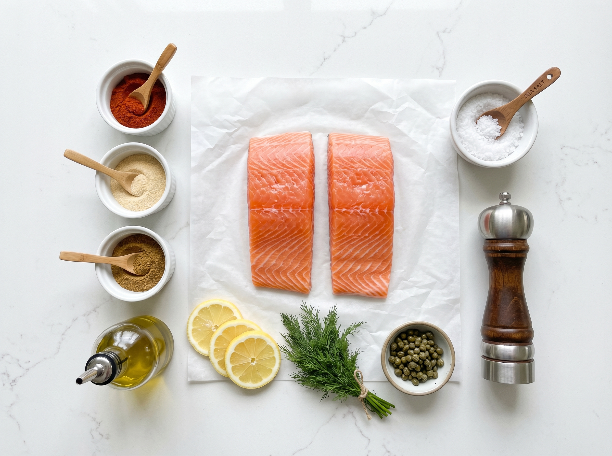
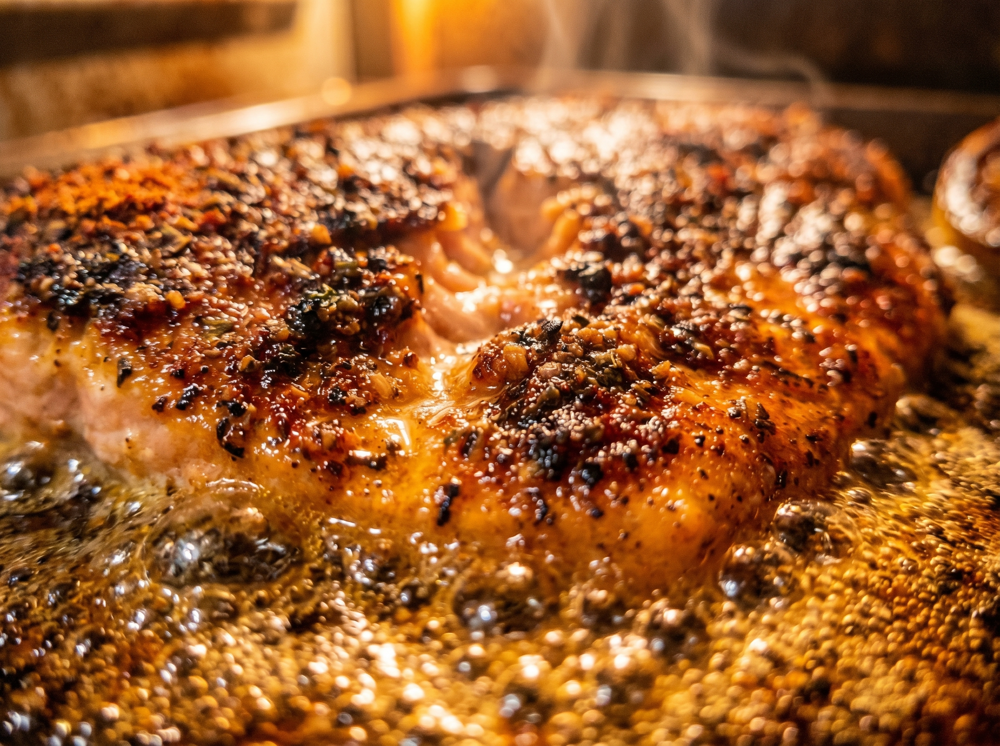

If you've ever made baked salmon that turned out bland, dry, or — the worst — that fishy-smelling overcooked disaster, I promise this recipe is the fix. The key is smoked paprika: not regular paprika, not sweet paprika, but smoked paprika — the Spanish kind made from peppers that were dried over an oak fire. It transforms a plain salmon fillet into something that tastes like it was kissed by a wood grill, even though it came out of a regular home oven.
Paired with four other pantry spices in a quick rub, this salmon bakes to perfection in just 12 minutes. The whole dinner — from cold oven to hot plate — takes 20 minutes. And unlike pan-searing salmon (which splatters oil all over your stovetop), this oven method is practically mess-free. Sheet pan in, salmon out, done.
Why You'll Love This Baked Salmon
- Foolproof method — Oven baking is the most forgiving way to cook salmon. No hot pan, no oil splatter, no babysitting. Set it and check it at 12 minutes.
- Bold, complex flavor from 5 spices — Smoked paprika, garlic powder, onion powder, cumin, and cayenne. Five spices you probably already have create a rub that tastes like it took hours to develop.
- Healthy and high-protein — 40g of protein per serving, rich in omega-3 fatty acids, and low in carbs. This is the rare recipe that's both genuinely healthy and genuinely delicious.
- One pan, no mess — Line the baking sheet with foil for near-zero cleanup. The whole dinner comes together in the time it takes to preheat the oven.
- Works with any salmon — Farm-raised Atlantic, wild-caught sockeye, frozen fillets — this rub works on all of them and covers any "fishiness" that might bother sensitive palates.
The Smoked Paprika Difference
Regular paprika (the bright red kind in most kitchen spice racks) is made from dried sweet red peppers. It adds color and mild flavor but not much depth. Smoked paprika (look for "pimentón" or "smoked paprika" on the label) is made from peppers that were dried over a wood fire before being ground. That smoking process adds a campfire-like depth that's impossible to replicate with anything else.
You can find it at Whole Foods, Trader Joe's, Kroger, or Amazon. The La Chinata brand in the red tin is the gold standard — it comes in dulce (sweet), agridulce (bittersweet), and picante (hot). For this recipe, dulce (sweet smoked) is the default. Get a tin — it'll last 2 years in your spice cabinet and will transform your cooking in ways beyond this recipe.
Ingredients
Everything is from your spice drawer plus fresh salmon. Look for salmon fillets at Costco (best price for large quantities), Trader Joe's (great quality fresh and frozen), or the seafood counter at Kroger or Whole Foods.
The Salmon
The 5-Ingredient Spice Rub
To Serve
Kitchen Tools You'll Need
- Rimmed baking sheet — A standard half-sheet pan. Line it with foil for easy cleanup.
- Instant-read thermometer (optional but recommended) — The most reliable way to tell if salmon is done. Target 125-130°F (52-54°C) for medium (slightly translucent in the very center — perfectly moist), or 145°F (63°C) for fully cooked. A cheap one from Amazon works perfectly well.
- Small bowl — For mixing the spice rub before it goes on the fish.
- Paper towels — Pat the salmon dry before oiling and rubbing. A dry surface helps the spice rub adhere and promotes better browning.
Smoky Paprika Baked Salmon
Bold 5-spice rub, perfectly flaky, ready in 20 minutes. The easiest impressive dinner you'll ever make.
Ingredients

- Spice Rub
- To Serve
Instructions
- Preheat oven to 400°F (200°C). Line a rimmed baking sheet with aluminum foil and lightly brush or spray with oil. If you have a wire rack that fits the pan, place it on top and oil that too — it allows heat circulation under the fish and prevents a steamed bottom.
- Mix the spice rub: Combine smoked paprika, garlic powder, onion powder, cumin, salt, black pepper, and cayenne (if using) in a small bowl. Stir until evenly mixed. Set aside.
- Prep the salmon: Pat each salmon fillet dry on all sides with paper towels. Dry fish is essential — moisture on the surface creates steam instead of a crust. Brush each fillet all over with olive oil.
- Apply the rub: Sprinkle and press the spice rub generously onto the top (flesh side) and sides of each fillet. Don't be shy — this is the flavor. Place fillets skin-side down on the prepared pan, leaving space between each.
- Bake: Bake at 400°F for 10-12 minutes. The salmon is done when it flakes easily at the thickest part when pressed with a fork. For a temperature check: 125-130°F (52-54°C) = medium (slightly translucent center, very moist), 145°F (63°C) = fully cooked (fully opaque, slightly firmer). Thicker fillets (over 1 inch) may need 13-14 minutes.
- Rest and serve: Remove from oven and let rest for 2 minutes — this lets the juices redistribute so the fish stays moist. Serve with lemon wedges and a sprinkle of fresh chopped parsley.

🔑 Pro Tips for Perfect Baked Salmon
- Bring salmon to room temperature before baking. Take it out of the fridge 15 minutes before it goes in the oven. Cold fish straight from the fridge cooks unevenly — the outside overcooks while the center is still cold. Room temperature fish cooks evenly all the way through.
- Pat it dry. Pat it dry. Pat it dry. Cannot say this enough. Moisture on the surface of fish creates steam in the oven, which prevents browning and makes the spice rub slide off. Paper towels, every time.
- Don't overbake. The number one mistake with salmon is cooking it too long. When it flakes at the thick part with gentle fork pressure, it's done. It will continue cooking slightly from residual heat after it leaves the oven. Pull it a minute early rather than a minute late.
- The skin acts as an insulator. Baking skin-side down protects the flesh from direct heat and bastes the fish naturally with its own fat. The skin peels off easily after baking if you don't want to eat it (though perfectly cooked crispy salmon skin is actually delicious).
- Frozen salmon works great. Thaw it overnight in the fridge, or use the cold-water method (submerge sealed bag in cold water for 30-45 minutes). Pat extra dry because thawed fish releases more moisture.
Variations & Flavor Twists
- Honey-glazed version: Mix 1 tbsp honey into 1 tbsp olive oil. Brush onto the salmon after applying the spice rub. The honey caramelizes during baking for a sweet-smoky glaze that's absolutely incredible.
- Lemon-herb: Skip the cumin and cayenne. Add 1 tsp dried thyme and 1 tsp dried dill to the rub. Finish with extra fresh lemon juice right out of the oven.
- Blackened: Double the cayenne, add ½ tsp dried oregano. Cook in a cast iron skillet over high heat (not in the oven) for a Cajun blackened crust.
- Asian-inspired: Replace the paprika rub with 2 tbsp soy sauce, 1 tbsp sesame oil, 1 tsp grated ginger, and 1 tsp honey. Marinate 10 minutes, then bake as directed.
- Whole salmon fillet: This rub scales perfectly to a large 2-3 lb whole salmon fillet (great for feeding a crowd). Increase baking time to 18-22 minutes at 400°F.
Serving Suggestions
- Classic plate: Roasted asparagus or green beans, and a simple rice or quinoa. The bold salmon flavors stand up well to simple sides that don't compete.
- Power bowl: Flake the salmon over a bowl of mixed greens, cherry tomatoes, cucumber, avocado, and a light tahini or lemon-olive oil dressing. One of the best meal-prep lunches imaginable.
- Tacos: Flake the salmon into warm corn tortillas with shredded cabbage, avocado, a drizzle of sriracha mayo, and fresh lime. Smoky paprika salmon tacos are a revelation.
- Pasta topper: Flake leftover salmon over simple garlic pasta or a creamy pasta (like our Sun-Dried Tomato Pasta on this site) for an effortless next-day dinner.
📦 Storage & Reheating
Store cooked salmon in an airtight container for up to 3 days. Cold leftover salmon is excellent flaked over salads.
Cooked salmon can be frozen for up to 2 months. Wrap individual fillets tightly in plastic wrap then foil. Thaw overnight in the fridge.
Reheat gently in a 275°F oven for 10-12 minutes (low and slow prevents overcooking). Microwave at 50% power in 60-second bursts. Or — just eat it cold over a salad. Cold salmon is legitimately great.
Frequently Asked Questions
How do I know when salmon is done without a thermometer?
The classic fork test: press gently on the thickest part with a fork and twist slightly. If it flakes apart into clean layers, it's done. If it resists and stays in one sticky piece, it needs more time. Another check: the color should change from deep orange-red (raw) to a lighter, more opaque peachy-orange throughout — though the very center may still look slightly translucent at medium doneness, which is perfectly safe and very moist.
What's the difference between smoked paprika and regular paprika?
Regular paprika is made from dried sweet red peppers — mild flavor, adds red color. Smoked paprika (pimentón) is made from peppers dried over a wood fire before grinding — it has a smoky, campfire-like depth that regular paprika completely lacks. They are not interchangeable in this recipe. If you only have regular paprika, add ¼ tsp of liquid smoke to the olive oil before rubbing — it approximates the smoky flavor.
Should I remove the skin before or after cooking?
After. The skin is much easier to remove after cooking — it releases cleanly from the flesh when cooked. Plus, it acts as a barrier during baking, protecting the bottom of the fillet from drying out. If you want crispy skin, cook skin-side up for the last 2 minutes under the broiler. If you just want to remove it, slide a spatula between the skin and flesh right on the pan before serving — it comes right off.
Can I make the spice rub in bulk?
Absolutely — this is one of the best reasons to make a bigger batch. Scale up the rub proportionally, mix well, and store in a sealed jar in your spice cabinet for up to 6 months. Use it on chicken thighs, shrimp, roasted vegetables, or grilled corn. It's a genuinely all-purpose smoky seasoning blend.
Can I use this recipe with other fish?
Yes — this rub and baking method works beautifully with any firm fish fillet. Try it on tilapia (bake 10-12 min), mahi-mahi (12-14 min), halibut (14-16 min for thick fillets), or cod (12-14 min). Thinner, more delicate fish like tilapia cook faster, so watch closely. The thicker the fillet, the longer it needs.
Nutrition Information
Per serving (1 salmon fillet). Values are estimates.
| Calories | 320 kcal |
| Protein | 40g |
| Carbohydrates | 3g |
| Fat | 16g |
| Saturated Fat | 3g |
| Sodium | 490mg |
| Fiber | 1g |
| Sugar | 1g |
You Might Also Love


Made This Recipe?
Did you try the honey-glazed version? Or make the spice rub in bulk? I want to hear everything. Leave a comment below and let me know how it went!
If this 20-minute salmon saved your weeknight dinner, please share it on Pinterest! It's the biggest way to help this site grow and reach more people who need quick, real-food recipes.
📌 Save to Pinterest